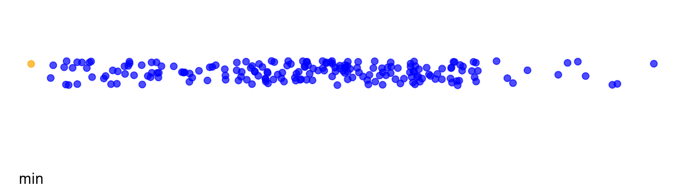
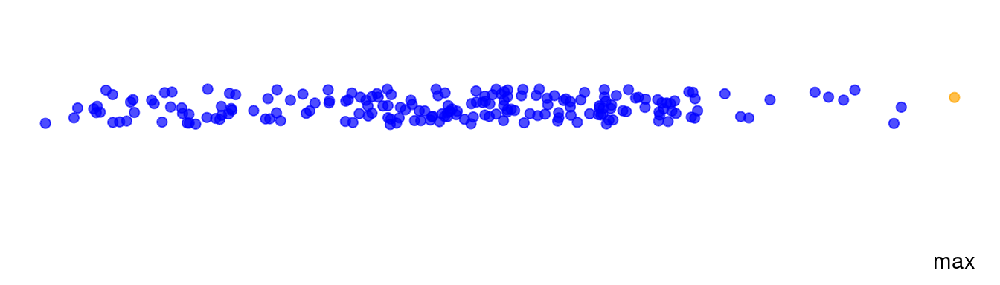
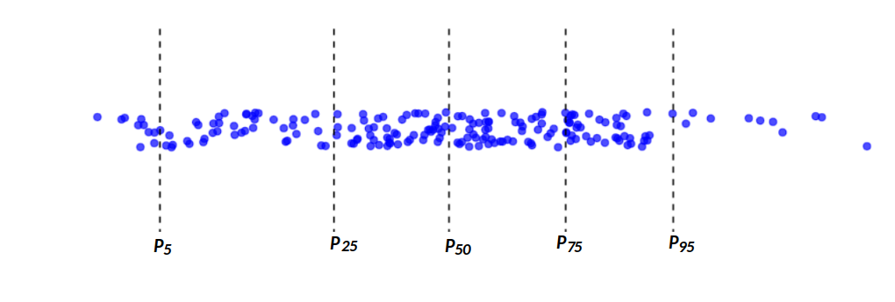
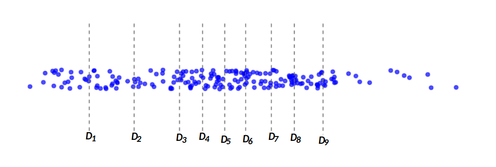
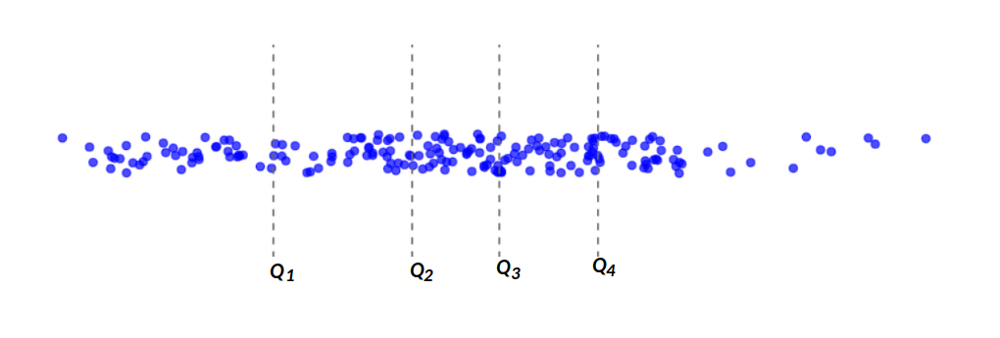
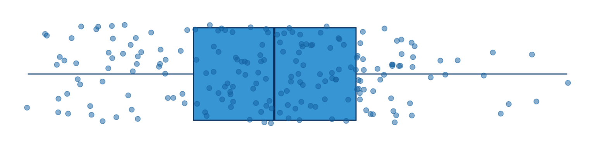
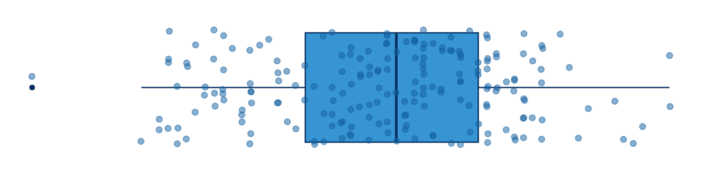

Los indicadores de posición ayuda entender la ubicación de un dato con respecto al conjunto de ellos. Es necesario por tanto ordenar los datos de menor a mayor con el fin de poder indicar la posición de un dato en terminos relativos.
Son ellos :
Corresponde al valor más pequeño de un conjunto de datos. Para obtenerlo se ordenan los datos de menor a mayor. Al ser comparado con el resto de datos permite establecer si se trata de un dato atípico o extraño.
Los siguentes valores corresponde a una muestra de edades de una base de clientes de una entidad financiera, ordenados de menor a mayor
30, 32, 32, 33, 33, 33, 33, 34, 34, 34, 35, 35, 35, 36, 36, 37, 37, 38, 38, 38, 38, 39, 39, 39, 39, 39, 40, 41, 41, 41, 42, 42, 42, 42, 42, 42, 42, 43, 44, 45, 45, 45, 45, 45, 46, 46, 47, 47, 48, 48, 49, 49, 49, 50, 50, 50, 51, 51, 51, 51, 51, 52, 52, 52, 52, 52, 52, 53, 53, 53, 53, 53, 53, 53, 54, 54, 54, 54, 55, 55, 55, 55, 55, 55, 56, 56, 56, 56, 56, 57, 57, 57, 57, 57, 57, 57, 57, 57, 58, 58, 58, 59, 59, 59, 59, 59, 59, 60, 60, 60, 60, 60, 60, 60, 60, 61, 61, 61, 61, 61 ,61, 61, 61, 61, 61, 62, 62, 62, 62, 63, 63, 63, 63, 64, 64, 64, 64, 65, 65, 65, 65, 65, 65, 65, 65, 66, 66, 66, 67, 67, 67, 67, 68, 68, 68, 68, 68, 68, 68, 68, 68, 68, 68, 69, 69, 69, 69, 70, 70, 71, 71, 71, 71, 71, 72, 72, 72, 72, 72, 72, 72, 73, 73, 74, 74, 74, 74, 74, 74, 76, 77, 78, 79, 82, 83, 84, 85, 88, 88, 18
valor mínimo : 30
Se referirse al valor más grande en un conjunto de datos o en una serie de números. Es una medida simple que indica el extremo superior de la escala de valores en un conjunto dado. Ayuda en la comprensión de la magnitud más alta de un conjunto de observaciones.
Es útil para identificar límites o restricciones en un conjunto de datos y para determinar si hay valores atípicos o excepciones que superan ciertos umbrales.

Corresponden a indicadores estadísticos que dividen el conjunto de datos en 100 partes iguales, cada una equivalente al \(1\)%, y cada percentil representa el valor por debajo del cual cae una determinada proporción de los datos. Los percentiles son herramientas fundamentales para comprender la distribución y la posición de los datos en un conjunto de observaciones.
Son utilizados en la evaluación de desempeño en pruebas
estandarizadas, el análisis de distribuciones de ingresos, la
identificación de valores atípicos y la toma de decisiones en campos
como la atención médica y la gestión empresarial. También se utilizan en
la creación de gráficos de caja (boxplot) para visualizar
la dispersión y la posición de los datos en una distribución.
Son entonces 99 números que dividen los datos en 100 partes de igual porcentaje : \(P_1\), \(P_2\), ……..\(P_99\)
En este caso el percentil \(50\) corresponde a la mediana, que divide los datos en dos partes iguales, con el \(50\)% de los valores por encima y el \(50\)% por debajo.
Los percentiles más comúnmente utilizados incluyen : \(P_5\), \(P_{25}\), \(P_{50}\), \(P_{75}\), \(P_{95}\)

Son 9 número que dividen los datos en 10 partes de igual porcentaje (10% cada uno)
\(D_1\), \(D_2\), \(D_3\),\(D_4\), \(D_5\), \(D_6\), \(D_7\), \(D_8\), \(D_9\)
El decil 3 divide en dos partes los datos: por debajo de el está un 30% de los datos, mientras el restante 70% se encuentra ubicado por encima.

Son 4 números que dividen los datos en cinco parte de igual porcentaje, cada una de ellas con el 20% de los datos
\(Q_1\), \(Q_2\), \(Q_3\), \(Q_4\)
Este indicador es muy utilizado en economía para representar los ingresos familiares, permitiendo evaluar la distribución de la riqueza. Tambien es empleado en educación para la evaluación de desempeño de estudiantes y en la segmentación de mercados entre las principales aplicaciones.

Son 3 números que dividen los datos en cinco parte de igual porcentaje, cada una de ellas con el 25% de los datos
\(q_1\), \(q_2\), \(q_3\)

El diagrama de cajas o boxplot, se contruye con los cuartiles que se ubican en las lineas de la caja, siendo \(q_1\) en inicio de la caja, \(q_2\), la linea central de la caja y \(q_3\) la linea que finaliza la caja.
En el área represenada por la caja se encuentra el 50% de los datos en el restante 50% dividido en dos partes. Un 25% en la parte inferior y un 25% con los datos mayores.
Note que la linea inferior llega hasta el dato menor y la linea siperior hasta el dato mayor. Esto no ocurre siempre, pues cuando se presentan datos atipicos esto se represntan por fiera de la linea

El punto en color más oscuro constituye un dato atípico que se detecta al trazar dos límites :
limite inferior = \(Q_1 - 1.5 \times RIQ\) límite superior = \(Q_3 + 1.5 \times RIQ\)
Si alguno de los datos se encuentra por fuera de estos límites se denomina atípico